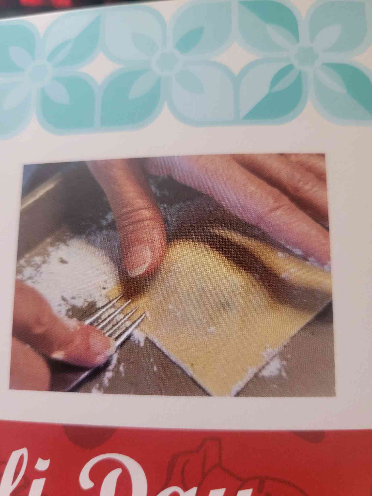

Ravioli

The Dough
- 4 to 5 eggs for one dough ball
- 1/2 cup of flour (gold medal white bleached) per egg (depending on the size of the egg) per dough ball. Always make 5 dough balls
- Eggs go in first, flour one cup at a time and mix
- Flour working surface and then knead,wrap in wax paper and let it rest in the fridge for about 20 min
The Filling
You will need:
- 4 lbs whole milk ricotta cheese (sierra brand) Monalisa's
- 32oz part skim milk ricotta cheese (sierra brand)
- Grated romano cheese (Costco) 2-3 cups
- 2 bunches or less of Italian parsley. Use about 1.5 chopped parsleys or more to taste
- Big Bowl
- One egg per pound of cheese depending on the consistency. If cheese is a little dry, use more eggs.
- Salt and pepper to mix
- Add grated cheese(about 2-3 cups)
The Making
- Fill Ravioli flattened dough, cut and close with forks. Freeze in cookie sheets then transfer to plastic.
- Have 2 large pots of boiling water with Scolapastas inside.
- Drop raviolis carefully in pots, when Ravioli float to the top, they're ready to eat.
- Remove from water, do not rinse, then serve with generous amounts of sauce. Serve meats seperately